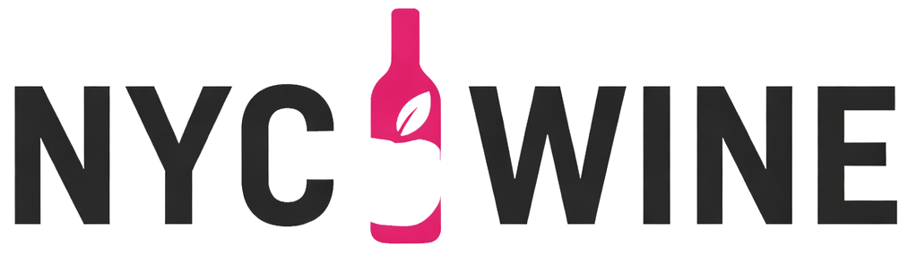

Why we build for families, not just businesses
Most of our work helps companies put AI into production. Spirantix asks a different question: what if the same engineering depth made daily life easier for the people who need it most? The result is a family of agents designed for seniors and for anyone who does not consider themselves technical. No manuals, no menus to memorize. If you can hold a conversation, you can use a Spirantix agent. And everything stays on hardware your family owns.
What we believe
Helping people comes first
Most AI is built to make work more efficient. Spirantix is built to make life better: easing the weight of memory loss, keeping families connected, and saving the stories that matter before they slip away.
Easy for everyone
Designed for older adults and for people who do not think of themselves as technical. Simple to talk to, quick for family to set up, and private by design. Available first on Claude and ChatGPT, with mobile apps to follow.
Made to outlast us
Memories should outlive any company, ours included. Everything is built on open standards, so what you keep and pass down stays readable and verifiable decades from now.
Emery
For someone living with dementia, Alzheimer's, or short-term memory loss, the real challenge is getting through a normal day. Emery is memory support built for exactly that: she manages the calendar and task list, builds a simple daily plan, and gives gentle reminders so nothing falls through the cracks. Appointments, medications, birthdays, the kettle you put on.
She also helps you hold on to people and moments. Take or upload a photo and simply ask, “Who is this?” Emery recognizes family and friends from a private knowledge base created from your own photo library, and answers warmly and conversationally.
Meet Emery →Capsa
Your photos are scattered across Google Photos, iCloud, Dropbox, old laptops, and external drives. Capsa gathers all of them into one organized collection on hardware you own, sorted by year, event, and the people in them.
Then comes the part no shoebox of prints could do: record yourself telling the story behind each album, and the Slideshow feature plays your pictures with your own voice narrating, in your words, for your grandchildren and theirs. Full-resolution photos never leave your machine.
Meet Capsa →Addie
In a world filling up with AI-generated images, Addie certifies what's genuine. Hand her a photo or document and she seals it: a visible code, woven into the picture itself, that proves who created it, when it existed, and that it has not been altered since.
Use Addie on her own to certify a single precious photo, or let her quietly certify everything in your Capsa collection, so the pictures you pass down can be proven real by your great-grandchildren.
Meet Addie →Heri
Every family has objects that carry weight: the watch that belonged to a grandfather, a military medal, a piece of jewelry with a story no one has written down. Heri, named from heritas — the Latin root of heritage — is your family’s heirloom and estate steward.
Heri catalogs your furniture, jewelry, collectibles, artwork, documents, and family heirlooms, tracks who owned each item and how it passed through generations, and stores your appraisals, receipts, and insurance records alongside each entry. When the time comes to think about what goes to whom, Heri helps families have that conversation with clarity and intention.
Meet Heri →
Uncork the CityOne of the world’s great wine cities, in one place
NYCWine.com is our guide for the people who drink, collect, and chase wine across the five boroughs: tastings, classes, and dinners updated daily, a directory of 335+ stores and 110+ bars, the latest headlines, and the community conversation in a single feed.
It is also a working showcase of how we operate a media property with AI. Agents round up events from sources across the city, keep the news desk current, and power a concierge that helps visitors find the right bottle or the right bar. A small editorial team reviews; the agents do the legwork.
Wine Events
Tastings, classes, dinners, and festivals from sources across NYC.
Wine Stores
335+ shops with addresses, phone numbers, and website links.
Wine Bars
110+ bars in Manhattan, Brooklyn, and Queens, searchable by borough.
Wine News
Headlines and stories from top wine publications, refreshed automatically.
Community
Conversations from Reddit, Instagram, X, and more in one feed.
Both properties carry the same conviction that drives our consulting practice: technology should serve people, not the other way around. Spirantix brings that to families holding on to their memories and stories. NYCWine.com brings it to a city full of wine lovers, with agents handling the daily work behind the scenes. If either one speaks to you, or to someone you love, we would be glad to hear from you.
Get In Touch